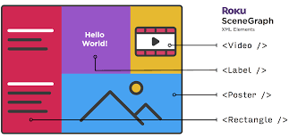

The channels for the Roku are developed in BrightScript. BrightScript is a Roku,Inc custom scripting language. The scripting language allows developers to make media and networked application a for embedded devices. BrightScript also compiles code into bytecode, which is a object-oriented programming code that is compiled to run on a virtual machine. This step is stated to happen whenever a script is runs and is loaded.
Roku developer documentation states that the syntax for the code is not C-like. It states that “...it is similar to Python or Basic or Ruby or Lua. BrightScript Objects and named entry data structures are Associative Arrays; this way it is similar to JavaScript or Lua. BrightScript supports dynamic typing (like JavaScript), or declared types (like C or Java). BrightScript uses "interfaces" and "components" for its APIs; similar to ".Net" or Java.” This is interesting because the company builds upon and uses a variety of programming languages so that their applications con work more efficiently.
The efficiency of this language if further emphasized in this statement form the developer documentation ,“BrightScript and the BrightScript Component architecture are written in 100% C for speed, efficiency, and portability. BrightScript makes extensive use of the "integer" type (since many embedded processors don't have floating point units). This is different from languages like JavaScript where a number is always a float. BrightScript numbers are only floats when necessary.”
Roku's BrightScript is described as being the “glue” of the network connectivity ,media playback and UI screens into applications making it a lot easier on the programmers.
Scene Graph XML is a framework created by Roku by combining two concepts, Scene Graph and XML. Scene Graph is a design algorithm that is used in computer graphic systems and renders the application screens and XML configures the Scene Graph screens. XML more specifically defines the attributes of the Scene Graph nodes.
Scene Graph XML is extremely important in the easy and efficient use of Roku players. The framework is described as “a new capability to design your application user interface for specific screen display resolutions, but also with the flexibility to allow the user interface to render correctly on Roku players that do not support the intended display resolution.
